Configuration for Google Sheets API
To allow the Archipelago Multi Importer (AMI) to read from Google spreadsheets, you first need to configure the Google Sheets API as outlined in the following instructions.
Please note, this set of instructions will only work for individuals using Google accounts affiliated with Organizations. We are working on the separate set of instructions needed for individuals who will be using personal/general Google accounts.
Generating Google OAuth2 Credentials
- Login to the Google Developer Console. You will see the API & Services Dashboard.

- If you have not created Credentials or a Project before, you will need to first create a Project.
- Recommended Project Name: "Archipelago Multi Importer" or "AMI".
- The Organization and Location information should be specific to you and your organization/institution.

- Next, click the
Create credentialsselect box and selectOAuth client ID
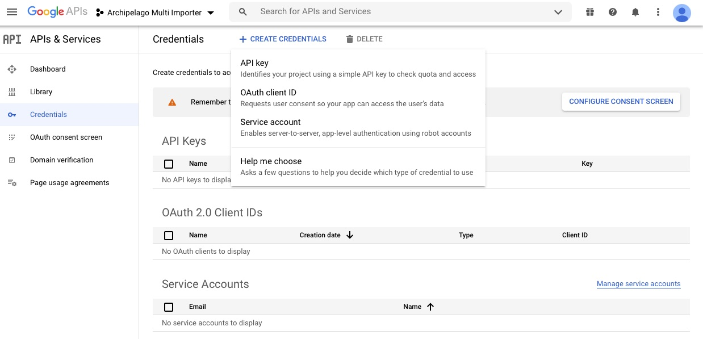
- You will now need to Configure the Consent Screen.
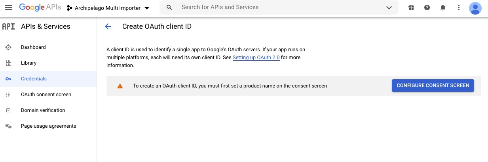
- On the initial OAuth Consent Screen setup, select
Internalfor User Type.

- Now enter
AMIas the App name, and your email address in the User support email. You may also wish to add Authorized domains (bottom of image below) as well.
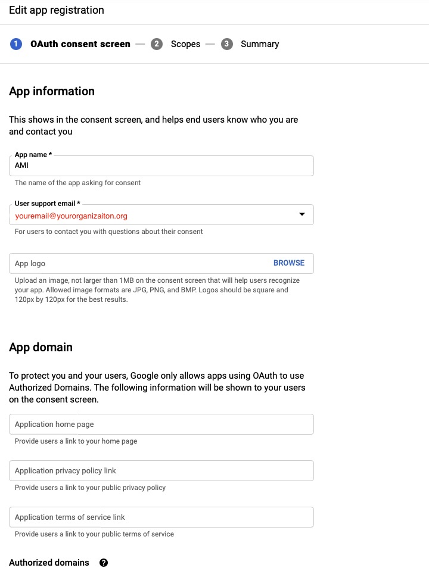
- On the Scopes page, select
Add or Remove Scopes. Then either search/filter the API table for the Google Sheets API. Or, underManually add scopesenter: https://www.googleapis.com/auth/spreadsheets.readonly

- After selecting or entering in the Google Sheets API, you should see this listed under
Sensitive Scopes.
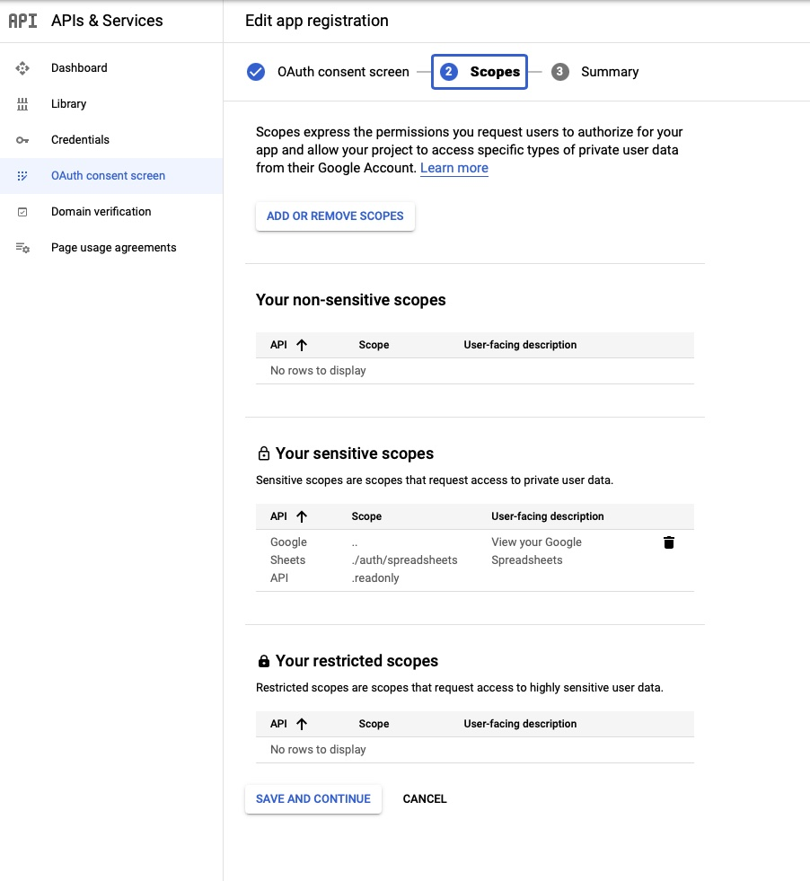
- Review the information on the
Summarypage, then Save.
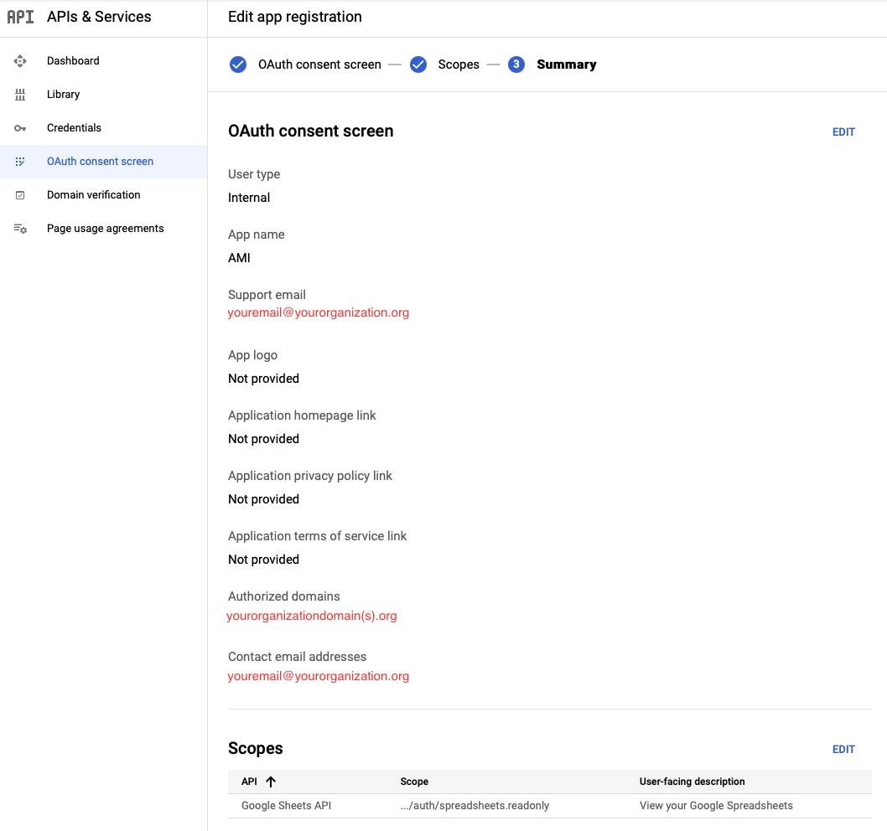
- You will now be able to
Create Oauth client ID. SelectWeb Applicationas theApplication type
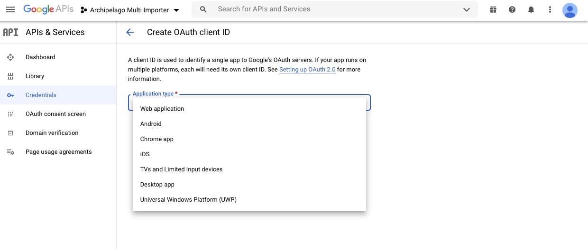
- Enter "AMI" under 'Name' and add any URIs you will be using below.
- For using AMI within your local Archipelago environment, enter
http://localhost:8001/google_api_client/callback - All URIs need to include
/google_api_client/callback
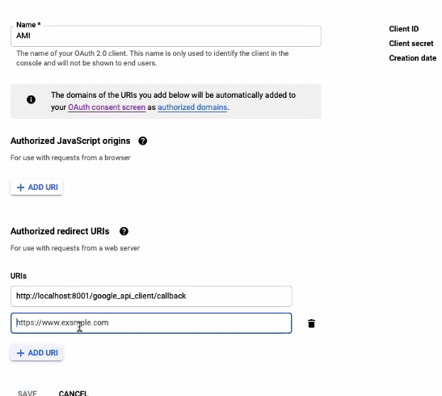
- After Saving, you will see a message notifying you that the OAuth client was created. You can copy the
Client IDandClient Secretdirectly from this confirmation message into a text editor. You can also access the information fromCredentialsin theAPIs & Servicessection in the Developer console, where you will have additional options for downloading, copying, and modifying if needed.
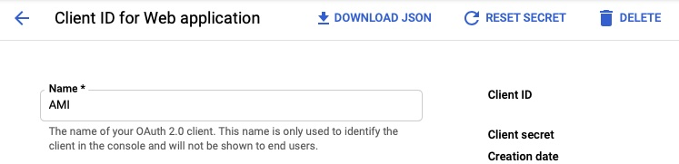
Configuring Google API Client Listing in Archipelago
-
In your Archipelago, navigate to the Google API Client Listing found under
/admin/config(here, in a local instance:http://localhost:8001/admin/config).

-
On the 'Add Google Api Client account' configuration page, enter the following information using your
Client IDandClient Secret. 'Developer Key' is optional. SelectGoogle Sheets APIunder 'Services' andhttps://www,googleapis.com/auth/spreadsheets.readonlyunder 'Scopes'. Check the box forIs Access Type Offline. Select the Save button.
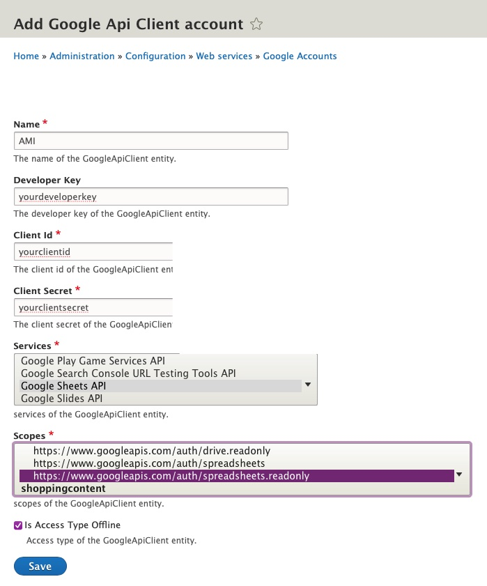
- You will now need to Authenticate your AMI Google API Client. Return to the Google API Client Listing page. Under the Operation menu on the right-hand side of the AMI client listing, select
Authenticate.
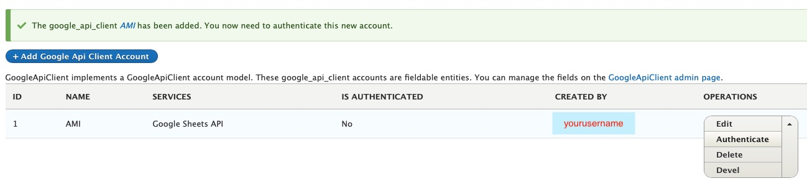
- You will be directed to the Google Consent Screen. You may need to login to your corresponding Google Account before proceeding. When loged in, you will see the following screen requesting that AMI is allowed to "View your Google Spreadsheets". Click
Allow.
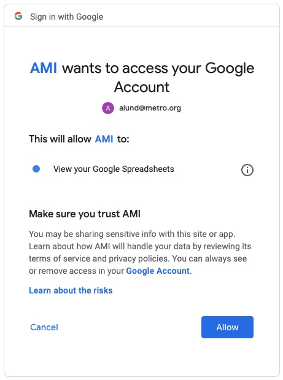
- On the Google API Client Listing page, your AMI client listing should now have 'Yes' under 'Is Authenticated'. You are now ready to use Google Sheets with AMI! Return to the main AMI documentation page to get started.
Thank you for reading! Please contact us on our Archipelago Commons Google Group with any questions or feedback.
Return to the Archipelago Documentation main page.